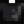

Bat Wing
Jump to navigation
Jump to search
| Bat Wing | |
| The material is surprisingly delicate. | |
| Information | |
| Source | |
| Sell Price | |
A Bat Wing is a type of Monster Loot dropped by Bats (any variant except for Iridium Bats) when slain. 10 Bat Wings can also be purchased for  30g each from Krobus on Sundays. It can also be gifted by a pet cat with max friendship.
30g each from Krobus on Sundays. It can also be gifted by a pet cat with max friendship.
The Desert Trader in the Calico Desert will trade one Butterfly Hutch for 200 Bat Wings.
Gifting
| Villager Reactions
| |
|---|---|
| Hate | |
Bundles
- Ten Bat Wings are an option for the
 Adventurer's Bundle in the Boiler Room.
Adventurer's Bundle in the Boiler Room. - Ten Bat Wings are required for the Spirit's Eve Bundle on the Bulletin Board (Remixed).
Crafting
| Image | Name | Description | Ingredients | Recipe Source |
|---|---|---|---|---|
| Lightning Rod | Collects energy from lightning storms and turns it into battery packs. | |||
| Monster Musk | Spray this on to draw more monsters out of hiding. | |||
| Dark Sign | Use an item on this to change what's displayed. The item won't be consumed. |
Tailoring
Bat Wing is used in the spool of the Sewing Machine to create the 
Quests
- Ten Bat Wings are requested by Void Salmon in a Fish Pond quest to increase the capacity of the pond from 3 to 5.
- Ten Bat Wings may be requested by Catfish in a Fish Pond quest to increase the capacity of the pond from 5 to 7.
- Twenty Bat Wings may be requested by the Raccoon at the Giant Stump as part of his fifth request, or as part of any request starting with the sixth.
History
- 1.4: Can now be used in Tailoring. Can be requested in Fish Pond quests. Can be produced by Fish Ponds.
- 1.5: Used as an ingredient in Monster Musk and Dark Sign recipes.
- 1.6: Can now be gifted by a pet cat with max friendship. May now be requested by the Raccoon. Is now used in the Spirit's Eve Bundle.